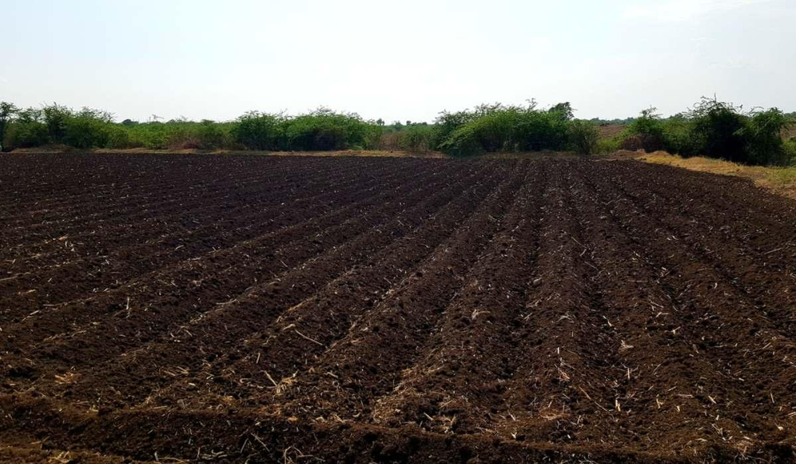
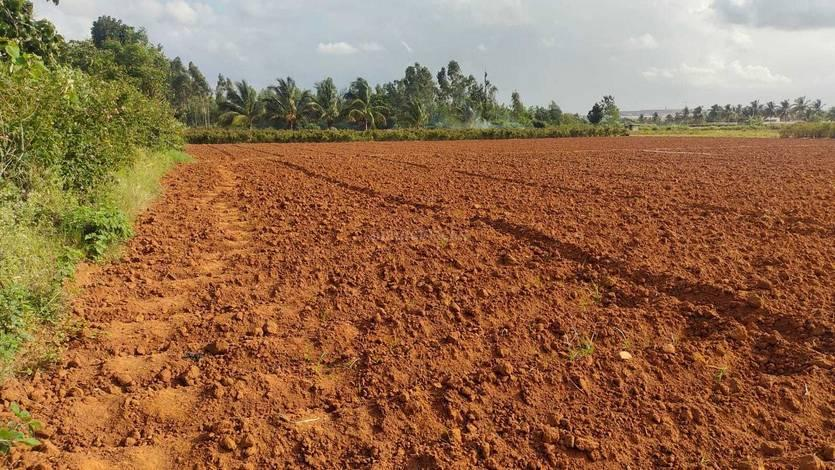
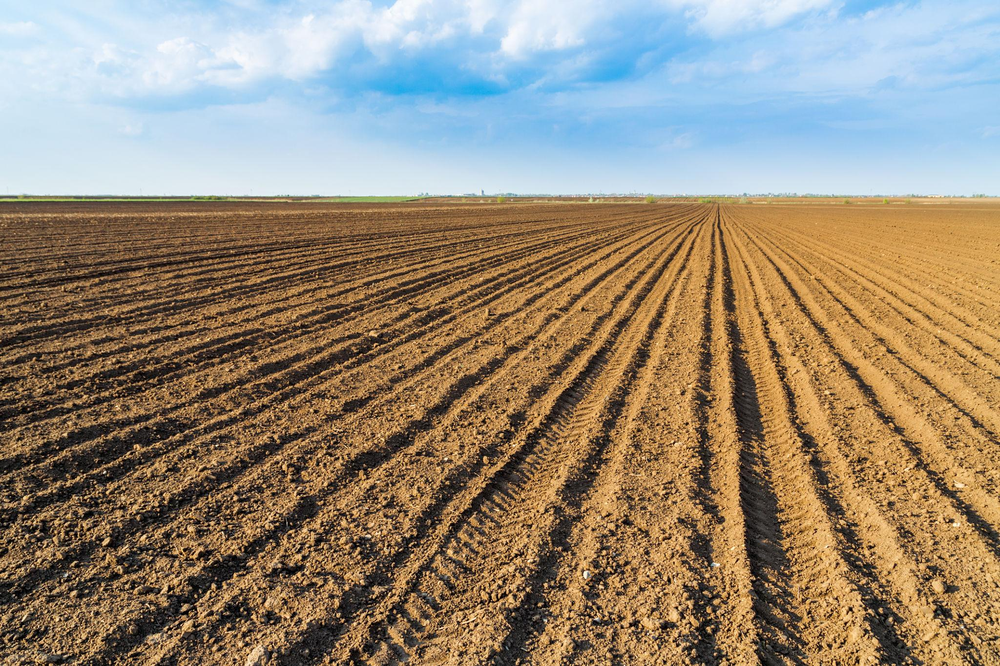
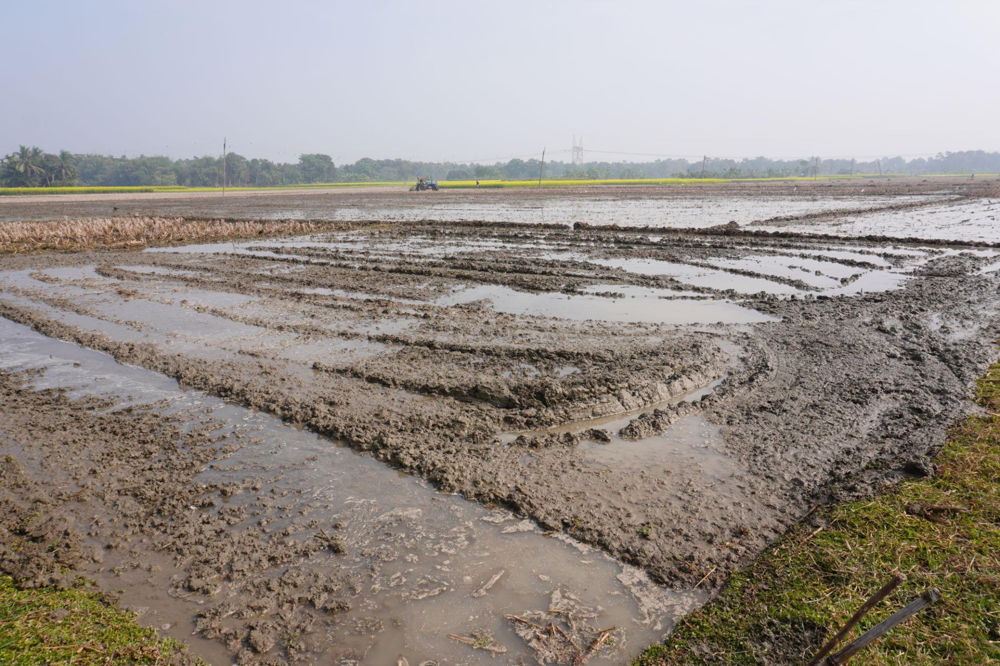
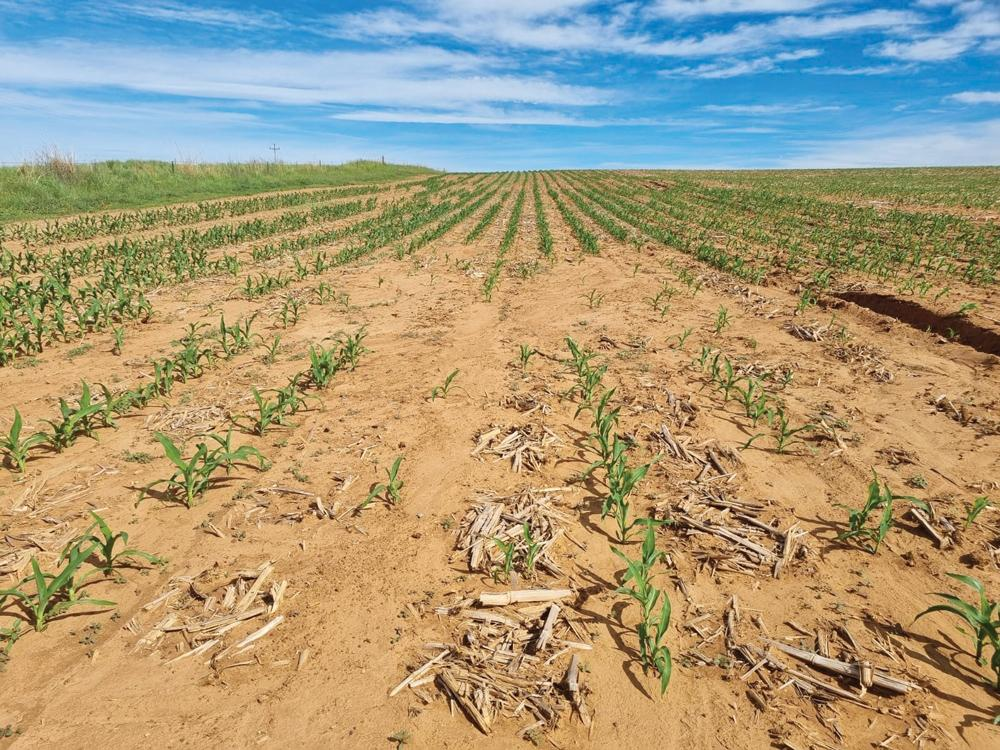

🌱 Soil Guide
Understand different soil types and the crops suitable for them.

Black Soil
Black soil has good moisture-holding capacity and is suitable for crops such as cotton, soybean and chickpea.
- Cotton
- Soybean
- Chickpea

Red Soil
Red soil is suitable for crops such as groundnut and millet when proper nutrients and water are provided.
- Groundnut
- Millet

Loamy Soil
Loamy soil is well suited for many crops because it provides good drainage and nutrient availability.
- Maize
- Wheat
- Mustard

Clay Soil
Clay soil holds water well and is suitable for crops that require higher water availability.
- Rice

Sandy Soil
Sandy soil has good drainage and is suitable for crops that require less water.
- Millet